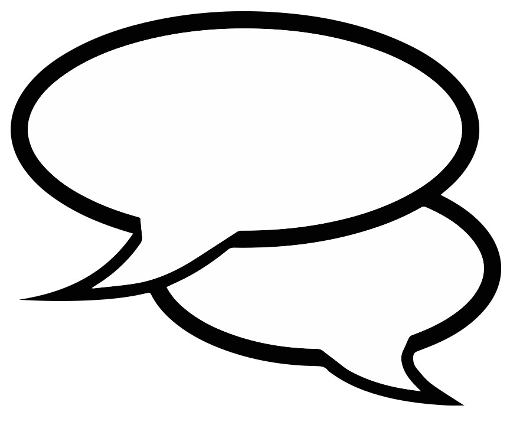
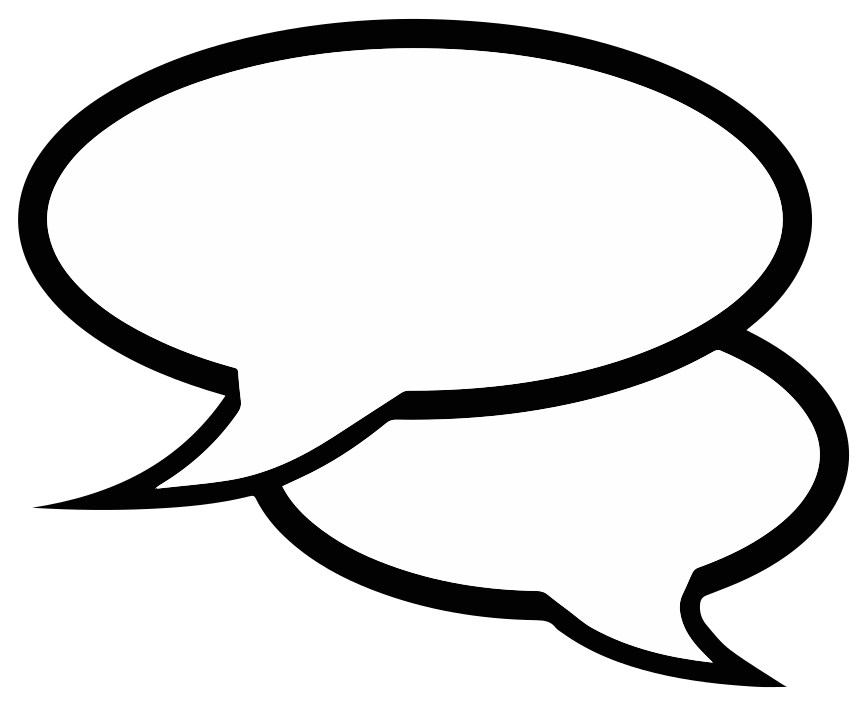

This is a very early partially functional version of the site. In order for us to build it and service all of America, we need your help.
VoteWise.net is a non-partisan website aimed at connecting voters and politicians without advertising dollars getting in the way. It’s being built by Silent Monkeys is a 501 (c)(3) non-profit based in Allentown, PA.
Right now, politicians have no way of reaching voters without advertising. This means that politicians have to waste a lot of time begging for money instead of doing what they are hired to do – help the community. This often forces politicians to listen more closely to the people who give them money than they do to the voters. Likewise, with local newspapers going out of business left and right, voters have no way to find out what local politicians really want to do- especially for the smaller offices like school board.
The Citizens United decision has further equated money with speech. This makes free speech anything but free.
VoteWise.net aims to change this by giving politicians a way to get their voice out without any financial backers while voters get to see what their politicians truly think in clear black and white terms. VoteWise.net will help make elections about ideas and not dollars. But it doesn’t stop with elections. Voters can continue to express how they want their employees (their politicians) to vote on every subject and politicians get free polling data to help guide them. It’s all absolutely free.
VoteWise is going to be a cross between OkCupid, Wikipedia, Facebook and Reddit but entirely dedicated to politics. If successful, it can change the face of democracy, and you can help build it.
Votewise.net will have three sections:
1- A Question and Answer section where voters and politicians can clearly see how each other thinks. After answering questions, voters and politicians can also get an OKCupid style matchup. Unlike typical 10 question poles, voters and politicians can choose to answer as many or as few questions as they want. There are thousands of questions to choose from in every topic known to mankind, so users can express exactly what they want in clear detail.
All the questions are multiple-choice so politicians can get instant poling data and voters get to see what the politician thinks without politically evasive language getting in the way. In addition, every question allows for adding your own comments, because sometimes reality doesn’t fit into multiple-choice.
During elections, voters can compare politician answers side by side. And during the rest of the year, they can continue to let their representatives know how they feel. Even the most local of politicians get to see what their citizens think in great detail so they know how to best serve them.
2- An informational section that includes essays, videos, a politician to voter dictionary and links to other useful sites. The staff will create some of the informational media with a mind to being balanced, unbiased and inclusive. We also include essays from the various interest groups explaining the logic behind their stance. News organizations can post articles about local issues. All of this allows voters and politicians one stop shopping to find the history and a wide variety of views on a subject to make informed decisions.
3- A Votewise User Forum where users can discuss the issues locally or across the nation. The Votewise User Forum can also be used for local politicians to keep an open dialogue with their constituents and for politicians to debate each other. In televised debates, politicians rely on personal style, but with a user forum, politicians can take days to research and come back with well thought out answers instead of catchy quips. The user forum could also be used by people to organize and take action on issues in their home towns.
According to a 2006 Pew Research poll, almost half of eligible voters say they don’t vote regularly because they don’t know enough about the candidates. VoteWise could fix that because all the information is easily accessible in one place with great detail. Voters would no longer have to follow the drama created by media over months and months. They wouldn’t have to decipher politically evasive language. And they would no longer have to vote blindly along party lines.
So, why would a politician use this site instead of what has worked for decades? Well, for a lot of politicians, “politics as usual” hasn’t worked for them. People who want to talk about the issues, people who care, have been kicked aside. VoteWise can become their path to success. We expect the early adopters to be candidates who either have little money for advertising or are being far outspent by their competition. This would include people running for school board in major cities, people running for mayor in small towns, non-front runners who are running for state office, and third party candidates running in any election. Eventually, as voters get used to using the site, they will expect other politicians to be more forthcoming with their platforms.
Peer pressure and comfort with the site will likely make national candidates start to make some use of the site down the road. But even if it never expands beyond local politics, it could have an incredible impact on America. If you look at Illinois, for example, there are eight cities where candidates have significant advertising dollars, but the state has 102 counties, 2,731 municipalities and townships, 912 public school systems, and 3,249 special districts. And even in cities like Chicago, there isn’t much information out there for the smaller offices.
We would love to see Votewise be fully function and implemented nationwide by the November 2016 election. But before we do that, we want to test launch in a few smaller local elections. In order to meet these goals, we need your help. We need donations, we need web developers, we need people to write questions, and we need people to spread the word to tell their friends so we can get their help to build the site and use it when it’s up and running.
If you have any further questions, please contact us at Votewise@SilentMonkeys.com
VoteWise is a project of Silent Monkeys Inc. Silent Monkeys is a Not-for-Profit 501(c)(3) organization. We do not endorse any political party, candidate or legislation. Donations are tax deductible.
The official registration and financial information of Silent Monkeys may be obtained from the Pennsylvania Department of State by calling toll free, within Pennsylvania, 1 (800) 732-0999. Registration does not imply endorsement.